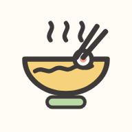

竹北~晚餐吃什麼?
離竹北中央路189號最近的 間｜晚上 6–7 點半有開・Google 4.2 星以上、400 則評論以上・最遠約 2 公里
👀 瀏覽 – 次📅 今天 – 次
--時
--分
--秒
距離晚餐時間還有
⏳
讀取天氣中…中央路這週晚上的天氣

📲 加到手機主畫面
像 App 一樣一鍵打開，沒網路也看得到名單
像 App 一樣一鍵打開，沒網路也看得到名單
晚餐轉盤
轉到的店會自動排進下方「這週晚餐行程」目前選的那一天（）；不喜歡可以按「復原」或再轉一次。
團隊投票
開一場投票、把連結丟到群組，大家點進來勾想吃的，票數即時更新。平手就交給轉盤決勝！決定好店家後，同一個連結就能填揪團點餐單，自動整理成一張單。
這週晚餐行程
一打開就幫你排好週一到週日每天一間（同一週不重複、當天晚上一定有開）。按「換一間」重抽，或用轉盤決定；改過的會記在你的手機上。
晚餐地圖
點地圖上的圓點看店家；有虛線圈的是今天排的那間。
點分類可以只看那一類；數字＝排名。
繪本地圖以中央路189號（★）為中心，虛線圈標出距離，依店家座標畫的示意；「真實地圖」可縮放，按店家的「導航」會開 Google 地圖。
晚餐名單
先點上面的分類卡片挑口味（可以複選），再依排名或依分類瀏覽。排名＝評分 × 評論數加權（評論越多越可信）。點店名或「🍽 餐點」看評論常提到的餐點；按「不想吃」會從轉盤和推薦行程排除。
聚餐紀錄
記下哪天和誰去吃了哪間。紀錄只存在這支手機，換手機前記得「備份」。
0去過幾間
0聚餐次數
0還沒去過